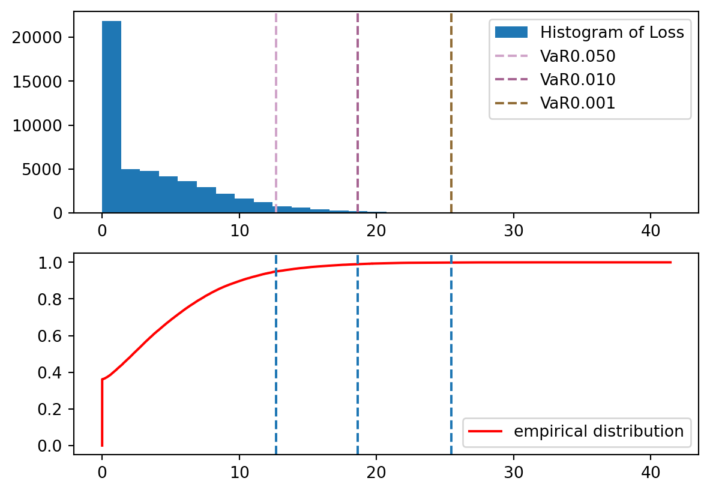

import numpy as np
import matplotlib.pyplot as plt
import pandas as pd
# set random seed for reproducibility
g = np.random.default_rng(1123)
d = 100 # number of instruments
# set the probability of default for d instruments, low 0.1 high 7 per cent
x = g.chisquare(1,(d,))
x = np.where(x<0.1, 0.1, x)
x = np.where(x>7, 7, x)
p = x/100
# set exposures parameters normalised to have total exposure 1000
y = g.weibull(3,(d,))
mu = y*1000/y.sum()
# set serverity parameters
a,b = 1.5, 2.5This is the first post in a series dedicated to credit risk models. The model discussed in this post is intentionally naive, as it relies on several unrealistic assumptions for the sake of simplicity and tractability. Despite its simplicity, this model serves as an excellent starting point for understanding the fundamental concepts of credit risk. It lays the foundation for more complex models that will be explored later in this series. The mathematical concepts introduced in this post are commonly found in any first-year probability textbook
PD-LGD-EAD approach
Credit risk models are mathematical representations of the potential losses within a portfolio of financial instruments. Each instrument carries a probability of default, leading to either a complete loss or a partial loss. Modeling credit risk is crucial as it offers valuable insights to stakeholders, enabling them to take proactive measures to mitigate these losses. Consequently, it plays a pivotal role in the financial sector.
Let’s introduce some notation. Consider a portfolio containing \(d\) instruments. The event of default for the \(i\)-th instrument is denoted as \(D_i\). Here, \(\mu_i\) represents the exposure at default (EAD) of the \(i\)-th instrument, and \(S_i \in [0,1]\) the loss given default (LGD) where \(S\) signifies severity, indicating the actual loss relative to the exposure. We define \(I_i := I_{D_i}\) as the indicator of the event \(D_i\), which follows a Bernoulli distribution with parameter \(p_i := \mathbb{P}[D_i]\). The total loss of the portfolio is expressed as the sum: \[ L = \sum_{i=1}^d \mu_i S_i I_i \tag{1}\] From the perspective of risk managers, the values of \(\mu_i\) are known. However, the uncertainly lies in whether an instrument will default and the corresponding severity, making the total loss \(L\) a random variable. Our interest lies in understanding the probability distribution of \(L\).
In this post we make the following naive assumptions.
Important
Assume that
- \(\{(I_i,S_i)\}_{i=1}^d\) is a family of independent random vectors.
- \(I_i\) is independent of \(S_i\) for all \(i\in [d]\).
Under this assumption, it is clear that \[ \mathbb{E}[L] = \sum_{i=1}^d \mu_i \mathbb{E}[S_i] p_i \] \[ \mathrm{Var}[L] = \sum_{i=1}^d \mu_i^2 (\mathbb{E}[S_i^2] p_i - \mathbb{E}[S]^2 p_i^2) \] The expected loss (EL) is an important quantity in the Basel III guidelines.
VaR and expected shortfalls
In a stable economy, default events are infrequent, making credit risk modeling primarily focused on rare occurrences. Obtaining a precise measure of the credit risk of a portfolio is not achieved by merely calculating the average; instead, it’s crucial to comprehend the quantiles. In the realm of credit risk, these quantiles are referred to as the Value at Risk (VaR).
\[
\mathrm{VaR}_\alpha(L) = \inf\{t\in\mathbb{R}: \mathbb{P}[L\ge t]\le \alpha \}.
\] Another commonly utilized metric is the Expected Shortfall, which represents the conditional expectation of the loss \(L\) given that \(L\) exceeds the VaR \[
E_\alpha(L) = \mathbb{E}[L|L\ge\mathrm{VaR}_\alpha].
\] Clearly \(E_\alpha(L)\ge \mathrm{VaR}_\alpha(L)\).
It’s crucial to acknowledge that the joint distribution of \((I_i, S_i)\) is unknown. To compute VaR and expected shortfalls, risk analysts must undertake at least three tasks:
- Model Calibration: This involves determining the model’s parameters using available data.
- Distribution Computation: Compute the distribution of \(L\) either analytically or through Monte Carlo simulation, based on the calibrated parameters.
- Metrics Computation: Utilize the obtained distribution to compute VaR, shortfall, or other relevant metrics either analytically or numerically.
The calibration process demands substantial effort and is specific to the chosen model. We will delve into this topic in a future post. For the remainder of this discussion, let’s assume that we have already established a set of parameters and focus on the last two steps.
It’s important to emphasize that deriving the exact distribution of \(L\) can be tedious, if not infeasible. In practice, risk analysts resort to simulations and numerical computations to determine VaR and shortfalls. This pragmatic approach is the one we adopt here.
Monte Carlo simulation for estimating VaR and shortfalls
Step 1
We first specify the parameters \(p_i, \mu_i\) and parameters for the distribution of \(S_i\). These parameters are generated at random with arbitrary choice of distributions, following
Bolder (2018)
Step 2
Next we simulate \(L\) for a large number of times accoding to Equation 1. We sort the samples in the end, useful for computing the empirical distributions later on.
m = 50_000 # number of repetitions
S = g.beta(a, b, (m,d))
I = g.uniform(size=(m,d)) < p
L = (S*I)@ mu
L = np.sort(L)Step 3
We plot the histogram and empirical distribution, then estimate VaR and expected shortfalls.
# Estimate VaR
pers = np.array([95,99,99.9])
alphas = 1 - pers/100
vars = np.percentile(L, pers)
fig, axes = plt.subplots(2,1)
axes[0].hist(L, bins=30, label='Histogram of Loss')
for i, var in enumerate(vars):
axes[0].axvline(var,linestyle='dashed', color=g.uniform(size=(3,)),label=f'VaR{alphas[i]:.3f}')
axes[0].legend()
axes[1].plot(L,np.linspace(0,1,len(L),endpoint=False), color= 'red', label='empirical distribution')
axes[1].legend()
for var in vars:
axes[1].axvline(var,linestyle='dashed')
plt.show()
# Estimate shortfalls
shortfalls = np.zeros(len(vars))
for i,var in enumerate(vars):
shortfalls[i] = L[L>var].mean()
pd.set_option('display.precision', 4)
pd.DataFrame({'alphas': alphas, 'VaR': vars, 'Shortfalls': shortfalls}).set_index('alphas')
| VaR | Shortfalls | |
|---|---|---|
| alphas | ||
| 0.050 | 12.6668 | 16.2741 |
| 0.010 | 18.6163 | 21.4599 |
| 0.001 | 25.4548 | 28.1533 |
We’ve completed tasks 2 and 3! Next time, we’ll delve into methods of parameter estimation, still within the naive setting. This will bring us full circle and complete the lifecycle of a single model.
References
Bolder, David Jamieson. 2018. Credit-Risk Modelling. Springer.